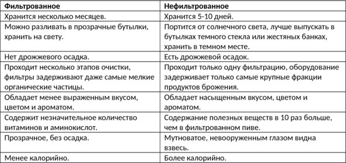

О культуре пития .. Основные виды и сорта пива...


В мире не существует единой классификации пива, из-за чего возникает путаница. В первую очередь нужно уметь отличать виды от сортов. Сорт определяет способ брожения (верховой или низовой) и сырье (ячменный, пшеничный или другой солод), а вид – цвет и характерные особенности технологии производства.
Виды пива
Виды пива по цвету:
– Светлое – варится из светлого (непрожаренного) солода, вследствие чего имеет желтоватый оттенок. Отличается ярко выраженным хмелевым ароматом и стойкой горечью. Именно светлые виды пива наиболее популярны в России, на них приходится около 90% продаж. Известные марки: Carlsberg, Pilsner Urquell, Staropramen, Leffe, «Жигулевское», «Балтика», «Бочкарев» и «Клинское».
– Темное – традиционное баварское черное пиво (Schwarzbier) низового брожения, имеющее темно-коричневый или черный цвет. Секрет приготовления заключается в использовании прожаренного солода. Но солод нельзя пережаривать, иначе в напитке появится сильный запах или же вкус горелого ячменя. Это некрепкое пиво с умеренной хмельной горечью и характерным дымным привкусом. Известные марки: Guinness, Budweiser Budvar Tmavy Lezak, Krusovice Cerne, Kloster Schwarz Bier.
Виды пива по технологии производства:
– Живое – изготовляется на основе живой культуры пивных дрожжей. В производстве не используются консерванты и пастеризация – нагревание пива до температуры 80—85° C с целью уничтожить находящиеся в нем микроорганизмы. Характерная особенность живого пива – непродолжительный срок хранения. Его нужно выпить в течение нескольких дней. Из-за особенностей производства живое пиво не может продаваться в бутылках, только в бочках на разлив. Его лучше покупать в магазинах возле пивзаводов.
– Фильтрованное – светлое пиво, из которого удалены осадок и остатки продуктов брожения. Фильтрованное пиво имеет прозрачный яркий цвет, но считается менее полезным, так как фильтрация удаляет большую часть активных веществ.
– Нефильтрованное – технология производства без фильтрации, вследствие чего на дне бутылки может накапливаться осадок. От живого пива отличается тем, что для продления срока хранения его пастеризуют и добавляют в состав консерванты. Польза нефильтрованного пива зависит от применяемых консервантов, многие из них являются канцерогенными веществами.
– Безалкогольное (крепость 0,2—1% об.) – пиво с минимальным содержанием спирта, которое варят по традиционной технологии, но потом фильтруют от спирта. Ни один современный метод фильтрации не может полностью исключить спирт. Но правильно очищенное безалкогольное пиво содержит меньше спирта, чем даже квас. Из-за отсутствия алкоголя вкус отличается от других видов, поэтому многие ценители пренебрежительно относятся к безалкогольному пиву. Кроме того, сложная технология очистки существенно удорожает производство, поэтому цена на безалкогольное пиво зачастую выше, чем на другие сорта.
Разница между фильтрованным и нефильтрованным пивом показана в таблице.

Сорта пива
В зависимости от способа брожения все традиционные сорта пива делят эль и лагер.
Эль (с индоевропейского языка переводится как «опьянение») – сорт пива, отличающийся тонким фруктовым привкусом и высоким содержанием спирта (3—12% об.). Первые рецепты появились в Англии в XV веке, но аналоги эля изготавливали еще древние шумеры за несколько веков до нашей эры. В Средневековье напиток относился к продуктам первой необходимости. В отличие от молока он не портился и не нуждался в особых условиях хранения. Благодаря высокой калорийности кружка эля заменяла порцию хлеба.
Особенности. От обычного пива классический эль отличается отсутствием хмеля в рецептуре. Благодаря этому он готовится быстрее и узнается по выраженному сладковатому оттенку. Вкусовой букет формируется травами и специями, которые вывариваются в сусле вместо хмеля. Готовый продукт не подвергают дальнейшей пастеризации или фильтрованию. Современные пивовары зачастую пренебрегают древними традициями, добавляя в состав эля хмель, чтобы их продукт мог называться пивом.
Еще одно принципиальное отличие эля от другого пива – технология производства. Эль готовят методом верхового брожения при температуре 15—24° C. Дрожжи не опускаются вниз при настаивании, как у большинства других видов пива, а держатся сверху, образуя пенную шапку. При верховом брожении появляется много эфиров и высших спиртов, которые формируют выраженный вкус и специфический аромат. Заключительный этап – выдержка и дозревание эля в прохладном помещении с температурой 11—12° C. В среднем на получение свежей порции требуется около четырех недель – это быстрые сорта, которые чаще всего предлагают в питейных заведениях. Но есть разновидности, на создание которых уходит около четырех месяцев.
Виды эля. Британский и ирландский эль классифицируют в зависимости от цвета, привкуса, аромата, используемых добавок в закваску. Разновидностей довольно много, поэтому назовем лишь самые распространенные:
– Ячменный (Barley Wine) – отличается повышенным содержанием спирта (8,5—12% об.) и высокой плотностью сусла – 22,5—30%. Этот эль еще называют «ячменными вином». Фруктовый аромат в сочетании с приятной солодовой горечью придает напитку неповторимый вкус. Цвет «Барли Вайн» – темный с оттенком золота и меди. Подают ячменный эль в винном бокале. Напиток хорошо хранится, после выдержки становится мягче.
– Пшеничный (Weizen Weisse) – светлый эль с умеренным фруктовым и цветочным ароматом. Иногда ощущается пшеничный оттенок в виде запаха свежего хлеба. Отличается светло-соломенным или темно-золотистым цветом.
– Портер (Porter) – изначально создавался для людей, занятых тяжелым физическим трудом. Его полное название – Porter’s ale, «эль для портовиков». Отличается большим количеством добавок, среди которых специи, травы, различные ароматические вещества. Цвет портера меняется в зависимости от используемых добавок и может быть светлым, золотистым и даже темным. В приготовлении используют несколько видов солода, что позволяет варьировать вкусовые оттенки. Крепость – 4,5—7% об.
– Стаут (Stout) – темный потомок портера. При изготовлении используют жженый солод, что придает насыщенный цвет и легкий намек на кофейные нотки. Долгое время именно этот вид эля считали полезным, его рекомендовали беременным и кормящим.
– Белый (Weisse) – легкий сорт с кисловатым привкусом. Очень популярен в Германии, за что и получил неофициальное название «Берлинский». Есть небольшой фруктовый акцент, который усиливается с возрастом. Цвет – светло-соломенный. В некоторых немецких пабах подается с сахарным сиропом.
– Горький (Bitter) – по праву считается национальным сортом английского эля. Несмотря на название, не является таким уж горьким, если сравнивать с остальными сортами. В производстве используют хмель, который на фоне полного отсутствия сахара отвечает за характерный вкус. Палитра цветов разнообразна и варьируется от светло-желтого до темной меди. Крепость – 3—6,5% об.
– Ламбик (Lambic) – считается традиционно бельгийским элем, в который добавляют ягоды малины и вишни, что придает характерный вкус и красноватый оттенок.
– Мягкий (Mild) – самый легкий эль. Крепость приближена к русскому квасу и составляет 2,5—3,5% об. Отличается выраженным солодовым вкусом. Выпускают два варианта – светлый и темный мягкий эль.
Как пить эль. Этикет употребления классического эля мало отличается от обычного пивного. Напиток не терпит суетливости. Его неторопливо наливают по стенке стакана, чтобы не выделялось много пены, которая отнимает характерную горечь. Иногда процесс наполнения бокала занимает около семи минут. Пьют эль не спеша, но и не смакуя. При растягивании процесса напиток выдыхается, теряя аромат. Существует традиция, согласно которой эль выпивают в три глотка с небольшими паузами, но сегодня этот ритуал не в моде.
Температура подачи эля – 6—12° C. Не стоит греть или замораживать напиток, иначе он потеряет аромат, цвет и вкус. Впрочем, у англичан на сей счет другое мнение – они пьют темное пиво подогретым, но это на любителя.
Лагер – общее название многочисленных сортов пива низового брожения (ферментации при низкой температуре). В настоящее время по этой технологии производится около 80% пива в мире. Популярность лагера объясняется более мягким в отличие от эля вкусом, длительным сроком хранения без ухудшения вкусовых качеств и возможностью транспортировки на большие расстояния.
Процесс брожения сусла в технологии производства лагера делится на два этапа:
– главное брожение, которое проходит при температуре от +5 до +10° C в течение 10—14 дней;
– дображивание (послеброжение) при температуре от +2,5 до +5° C, занимающее не менее трех недель. Чем больше времени отведено на послеброжение, тем вкуснее получается пиво. Хороший лагер должен вызревать минимум четыре месяца.
Родина лагера – Германия. Зимы в Баварских Альпах холодные, а пиво всегда было самым дешевым и доступным видом алкоголя. Часто пивоварением занимались монастыри. Из воды, солода и хмеля получалось сытное, бодрящее питье, которое в дни постов разрешалось вкушать братьям как «жидкий хлеб». Большие запасы пенного напитка хранились в холодных монастырских погребах и в ледяных горных пещерах. В тепле пивные дрожжи всплывают наверх, а в холоде оседают на дно, поэтому открытый в XV веке способ изготовления пива при низких температурах получил название низового брожения. В Средние века из-за невозможности искусственно понизить температуру до нужного уровня пиво низового брожения варили только зимой.
Слово «lager» в переводе с немецкого означает «склад», «хранилище». Если пиво дображивало всего несколько недель и тут же подавалось к столу, его называли «кабацким» (Schenkbier). Благородный напиток, вызревавший в течение многих месяцев, прозвали «пивом из кладовки» – Lagerbier. Кроме отменного вкуса, лагер обладал еще двумя замечательными качествами, которые и предопределили его триумфальное шествие по Европе: он прекрасно переносил транспортировку и долго сохранял свежесть. Поэтому его варили во всех немецких княжествах и соседних землях: в Австрии, Чехии, Франции, Бельгии.
В России пиво лагер вошло в моду в XIX веке. Оно было более освежающим и менее крепким, чем английские сорта: эль и портер. В 1839 году «баварское пиво» начал производить пивоваренный завод П. Казалета.
Виды (сорта) лагера. В зависимости от особенностей технологии производства выделяют несколько групп:
– темный лагер;
– светлый лагер;
– европейский янтарный лагер;
– пильзнер;
– бок;
– ледяное пиво.
Темный лагер. До XIX века все пиво лагер было более-менее темным из-за немного поджарившегося или даже подгоревшего при сушке солода. Классикой считается темное мюнхенское (Munchner Dunkel) пиво. В старину изготовление этого сорта регламентировалось законом от 1516 года о чистоте пива, согласно которому для приготовления Dunkel использовались только три ингредиента: солод, хмель и вода. Темное мюнхенское может быть фильтрованным и нефильтрованным, цвет варьируется от старой меди до темно-коричневого с рубиновым оттенком, крепость – от 4,5 до 6% об.
Этот сорт лагера самый ароматный, пахнет хлебом, чуть-чуть карамелью или шоколадом. Он немного сладковат, вкус – хлебный, с легким ореховым или карамельным привкусом и солодовым послевкусием, чувствуется пикантная хмельная горчинка. Высшим мастерством пивоваров считается умение «пройти по краешку» и не допустить во вкусе или запахе мюнхенского темного не только горелых, но и явно выраженных карамельных нот. В американский темный лагер добавляют кукурузу или рис. Этот сорт несколько слаще мюнхенского.
Еще одна разновидность темного лагера – черное пиво (Schwarzbier). Оно на самом деле черное или темно-коричневое с гранатовыми отблесками, обладает приятным солодовым вкусом. Для его приготовления солод хорошо обжаривают, но следят, чтобы зерна не подгорели. Крепость – от 3,5 до 4,5% об.
С 1678 года и по сегодняшний день на севере Баварии, в Бамберге, варят копченое пиво (Rauchbier). Для его приготовления зерна солода специально коптят. Для нейтрализации горечи в сусло добавляют пшеницу, напиток получается кисло-сладким. Немцы считают, что подобное пиво идеально подходит к копченым колбасам и острым сырам.
Светлый лагер. Впервые сварил Габриэль Зедльмайр на знаменитой мюнхенской пивоварне Spaten в 1895 году. Вкус светлого лагера чуть слаще, чем у мюнхенского темного, также более выражена хмелевая горчинка. Мюнхенское светлое (Munchner Helles) имеет приятный золотисто-соломенный цвет и крепость от 4,5 до 5% об. Классическим образцом этого пива до сих пор может служить Spaten Premium Lager.
Чуть более крепкий (от 5,2 до 6% об.) немецкий вариант светлого лагера – дортмундское экспортное или, как называют его в Германии, Dort. Цвет пива – ярко-золотой, во вкусе явственно ощущается хмелевая горечь.
В США варят три сорта светлого лагера: легкий, стандартный и премиум. В пиво добавляют кукурузу, которая немного чувствуется во вкусе. Цвет напитка – светло-золотистый, крепость варьируется от 4,1 до 6% об.
Европейский янтарный лагер. Во второй половине XIX века австрийский пивовар Антон Дрегер задался целью создать идеальный лагер. Пиво получилось на загляденье: удивительно насыщенного янтарного цвета, с хорошо сбалансированным солодовым вкусом и умеренной крепостью (от 4,5 до 5,7% об.). Вот только на родине, в Австрии, этого лагера уже почти не найти. Зато его делают в Мексике, куда в конце XIX века эмигрировало немало австрийцев.
Попробовав венский лагер, мюнхенский пивовар Габриэль Зедльмайр решил сварить праздничное пиво, которое можно было бы пить на Октоберфест. Так родилось мартовское пиво (Marzen). Этот лагер чуть крепче венского (до 6,5% об.), имеет янтарно-медовый цвет и сбалансированный солодовый вкус. Вот уже более ста лет это пиво варят в марте, чтобы завсегдатаи многочисленных мюнхенских пивных могли отведать его на веселом октябрьском празднике.
Пильзнер. В отличие от всего остального мира, чехи не считают пильзнер (Pilsener) лагером. Для них пльзеньское пиво – национальное достояние. Три года баварский пивовар Йозеф Гролл создавал рецепт уникального пива для пивоварни Пльзеня. Вода в источнике неподалеку от города оказалась удивительно мягкой и вкусной, а в окрестностях местечка Жатец рос отборный хмель. В 1842 году мастер представил легкое (от 4 до 5% об.) пиво на суд общественности. Вскоре о золотистом пльзеньском пиве узнали далеко за пределами Чехии. Главное отличие его от традиционных лагеров – вкус хмеля, преобладающий над солодовым привкусом. Немцы переняли удачный рецепт. Сегодня около 70% пива в Германии – именно пильзнер, который сами немцы называют Pils. В Баварии он немного слаще оригинального, в северной части страны – более горький. Ну а самые преданные пивоманы считают своим долгом хоть раз в год наведаться в Богемию, где делают настоящее пльзеньское пиво, Plzensky Prazdroj.
Бок. Когда заканчивается Октоберфест, приходит пора варить новый лагер. В средине октября в предгорьях Альп варят бок (bock) – крепкое пиво низового брожения. Узнать его очень легко по этикетке с изображением веселого козла. Обычная крепость этого вида лагера – 7,5% об. Есть марки темные и светлые. Еще крепче (от 7,5 до 13% об.) двойной бок – Doppelbock. Самый крепкий лагер – EKU Kulminator (13,2% об.), производят в Кульмбахе.
Ледяное пиво. Если уже вызревший лагер резко охладить до минусовой температуры, вода превратится в кристаллы. Удалив их, можно получить мягкое пиво с хорошим вкусом, но высоким содержанием алкоголя. Этим способом в Германии делают ледяной бок – Eisbock. В Канаде замороженный лагер фильтруют, получая ледяное пиво Ice Beer.
Как пить лагер. Лагер лучше пить охлажденным, но не замороженным. Так, светлые сорта и пильзнер «раскрываются» при температуре от +6 до +9° C. Для темных подойдет +10° C, а для мартовского пива – и вовсе +12° C. Причем наливать пиво следует в бокал, охлажденный до соответствующей температуры.
Темные сорта особенно хороши с сытными мясными блюдами. Светлые лагеры прекрасно гармонируют с креветками, мидиями, другими морепродуктами, а также пастой с томатами и базиликом. Традиционно к мартовскому пиву подают или колбаски, или жареную форель. С дичью (особенно водоплавающей) хорошо сочетаются бельгийские лагеры с фруктовыми добавками. Дегустируя пиво, следует расположить сорта по возрастанию крепости и начинать с более слабых.